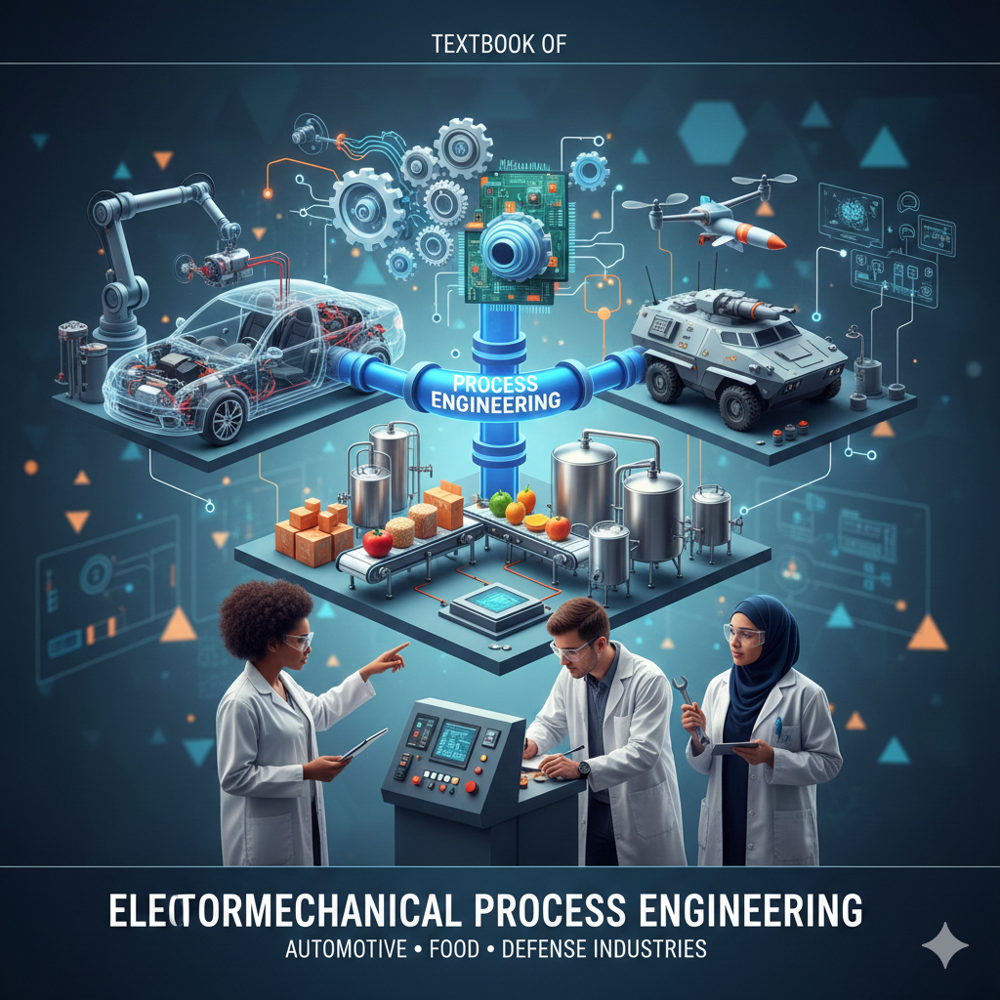

Process Engineering
Introduction

Why are we studying this?
Defining and identifying manufacturing processes is critical to understanding the role that automation plays and how to program an industrial process line.
What are some examples of a manufacturing process?
What do we have or use that is manufactured?
What is the biggest manufacturing change that you have experienced so far?
Processes have changed throughout the centuries and have been driven by the four Industrial Revolutions.
First Industrial Revolution – Coal in 1765
- This transformed society from an agricultural base to an industrial base. Processes became mechanized and rather than hand made, products were manufactured. The discovery of coal and the development of the steam engine and metal forging transformed the way goods were created.
Second Industrial Revolution – Gas in 1870 *The discovery of oil and electricity fueled the second industrial revolution. The discovery of oil lead to the invention of the combustion engine and new steel and chemical based products entered the manufacturing streams. Technological advances in communication were driven by the invention of the telegraph and later the telephone. Modes of transportation developed with the invention of the airplane and automobile. These discoveries helped to drive the advent of mass production which forever changed how items were produced.
Third Industrial Revolution – Electronics and Nuclear Energy in 1969 The third industrial revolution is dominated by the development of electronics and the beginning of the age of computers. Technological developments were centered around four pillars of science: telecommunications, biotechnology, information technology and energy engineering.
Fourth Industrial Revolution – Internet and AI
- The fourth industrial revolution describes the current era of digitalization, automation, and advanced manufacturing technology. It’s characterized by the convergence of emerging technologies, such as robotics, the Internet of Things (IoT), and 3D printing.
Check out these videos:
and
What is a Fifth Industrial Revolution going to look like?
Further Reading Whitepaper ‘What is Manufacturing’ by Intel
Grade items and their weights are maintained in FOL and are the single source of truth. The course schedule below shows what is assessed and when; for current weights and marks, check the FOL grade book.
Course schedule
The term is 14 weeks. Every lab runs in the week of its number (Lab 1 in week 1, Lab 14 in week 14). Each lab’s prerequisite lecture material is taught in the same week or earlier.
| Wk | Lecture | Lab |
|---|---|---|
| 1 | Ch 1 Types of Manufacturing | Lab 1 — LightBot & Rocksi |
| 2 | Ch 2 Process & Design · Ch 8 Industrial Robotics | Lab 2 — Design Documentation |
| 3 | Ch 4 Plant Layout · Ch 16 AnyLogic Simulation | Lab 3 — Facility Design & Simulation |
| 4 | Ch 3 Integrated Mfg Systems · Ch 5 Lean | Lab 4 — Lean VSM, Takt and Pull |
| 5 | Ch 7 Ergonomics · Ch 6 Guarding & Safety pt 1 | Lab 5 — Ergonomics |
| 6 | Ch 10 SPC · Ch 11 MSA | Lab 6 — SPC & Gauge R&R |
| 7 | Midterm Test (in lecture time) · Ch 20 Working with AI | Lab 7 — ML Week 1 |
| 8 | Ch 21 Weeks 1–2 | Lab 8 — ML Week 2 |
| 9 | Ch 21 Week 3 · Ch 12 TPM | Lab 9 — ML Week 3 |
| 10 | Ch 21 Week 4 · Ch 15 Troubleshooting & RCA | Lab 10 — ML Week 4 |
| 11 | Ch 21 Week 5 · Ch 6 Safety pt 2 · Ch 9 Automation | Lab 11 — ML Week 5 · Lab 14 released |
| 12 | Ch 21 Week 6 · Ch 13 Quality Systems | Lab 12 — ML Capstone |
| 13 | Ch 14 PFMEA | Lab 13 — TPM/OEE & RCA |
| 14 | Final Test · review | Lab 14 — RoboDK work cell due |
The midterm is written during lecture time in week 7, so the week-7 lab period runs as normal. Lab 14 is a take-home lab: it is released in week 11 and is due at the end of week 14, and it requires a short screen recording.
This grid is a reconstruction from the course plan — confirm it against what is actually taught before relying on the week-by-week lecture pairings.
Labs
- Late penalty is 25% per lab session.
- Labs 1–6 must be completed before Week 7.
- Lab 14 is a take-home lab, released in week 11 and due at the end of week 14; it requires a short screen recording. All other labs are due at the end of the scheduled lab period.
- Bring your lab kit and PPE to every lab session.
Assignments
- 6 Assignments.
- All are FOL quizzes, with at least one week open.
Quizzes
- 6 Lecture Quizzes and 6 Lab Quizzes.
- Quizzes are given randomly throughout the term as a “pop quiz”.
- Quizzes are given at the start of the lab session (10 minute log in window) or at the end of the lecture.
- You must be in attendance to write the quizzes.
Tests
- During in-person lecture time (90 minutes). One midterm test in week 7, one final test in week 14.
- Both tests are cumulative and online, in-person.
- Closed-book with handwritten cheat sheet; details will be posted on FOL closer to the date.
- Kit calculators allowed.
Other Grade Considerations
In order to pass, two conditions must be met: * Overall passing grade (50%). * Attendance and submission of the mandatory labs (labs 1 through 12). Lab 13 and Lab 14 are not mandatory to pass, but are graded.
How to succeed
- Come to class and lab sessions Participate
- Complete examples given in class
- Do the homework and assigned reading
- Attend office hours
Cheating and Plagiarism
Students must write their reports and assignments in their own words. Whenever students take an idea or a passage from another author, they must acknowledge their debt both by using quotation marks where appropriate and by proper referencing such as footnotes or citations. This includes non-published sources, such as work completed in previous years or a classmate’s work.
Use of generative AI
Fanshawe policy A136 permits generative AI in this course only where the instructor has given prior consent. This section is that consent, and it is specific: for each assessment below, AI use is either required, permitted with disclosure, or not permitted. If an assessment is not listed, treat it as not permitted and ask.
Where AI is permitted or required, you must still be able to explain every line you submit. If you are asked “why does this line do that?” and cannot answer, that work does not count as yours — regardless of whether it runs correctly.
Where AI use is permitted with disclosure, add a short note naming the tool and what you used it for.
| Assessment | AI use | Why |
|---|---|---|
| Lab 1 — LightBot & Rocksi | Not permitted | The outcome is your own logic; an AI solving the puzzle removes the lab |
| Lab 2 — Design Documentation | Not permitted | Already stated in the lab |
| Lab 3 — AnyLogic Simulation | Not permitted | Already stated in the lab |
| Lab 4 — Lean VSM | Permitted with disclosure | Not for the map or the takt/PCE calculations |
| Lab 5 — Ergonomics | Permitted with disclosure | Inseer is itself an AI tool and is required — that is a lab instrument, not a generative AI writing your report |
| Lab 6 — SPC & Gauge R&R | Not permitted for readings and calculations; permitted for checking your written reflection | You are the measurement system being studied |
| Labs 7–12 — ML module | Required | You are assessed on directing an LLM well, not on writing Python |
| Lab 13 — TPM/OEE & RCA | Required for the classifier task; permitted with disclosure elsewhere | Same skill, unfamiliar dataset |
| Lab 14 — RoboDK work cell | Permitted with disclosure | The station, program and cycle times must be your own |
| Assignments 1–6 | Permitted with disclosure | |
| Pop quizzes, midterm, final | Not permitted | Closed-book, in-person |
FOL
- Lectures will be posted after class, as well as supplementary material.
- Assignments and lab manuals will be posted ahead of time. You will always have at least one week’s notice.
- All announcements will be made through the FOL course.
Accessibility
Please contact me if you require material in an alternate format or if any other arrangements can make this course more accessible to you.
Consider contacting Accessibility Services for specifics on accommodations that you may be eligible for. M-Fr 8:30-4:30 F2010, 519-452-4282, accessibility@fanshawec.ca
Fanshawe’s Recording Policy
It is forbidden for students to record without written permission from the instructor (and) as an approved accommodation. Recording without permission or sharing a recording will result in disciplinary action.
If a class is being recorded with permission: it will be announced, and alternate means to participation will be made available to protect students’ privacy.